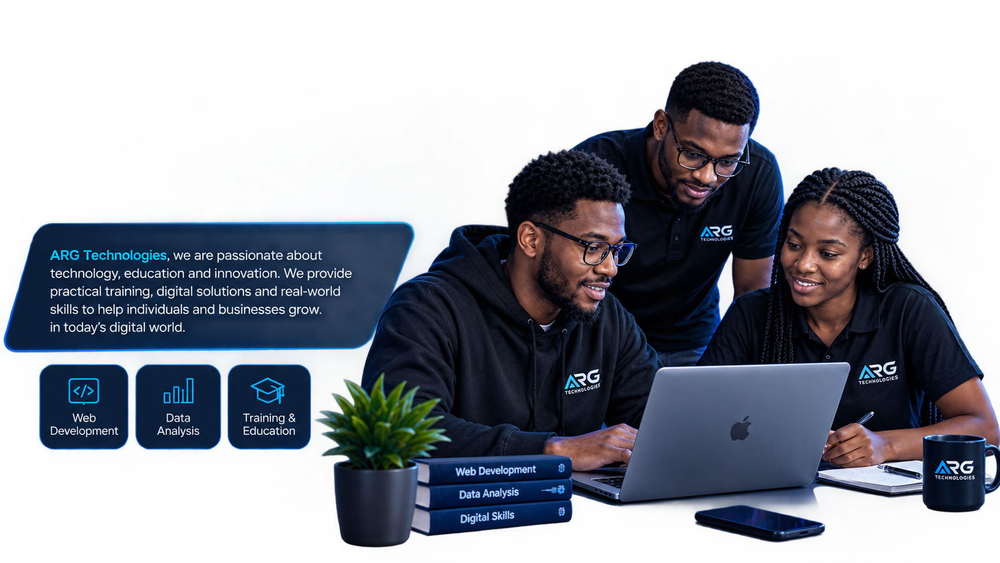
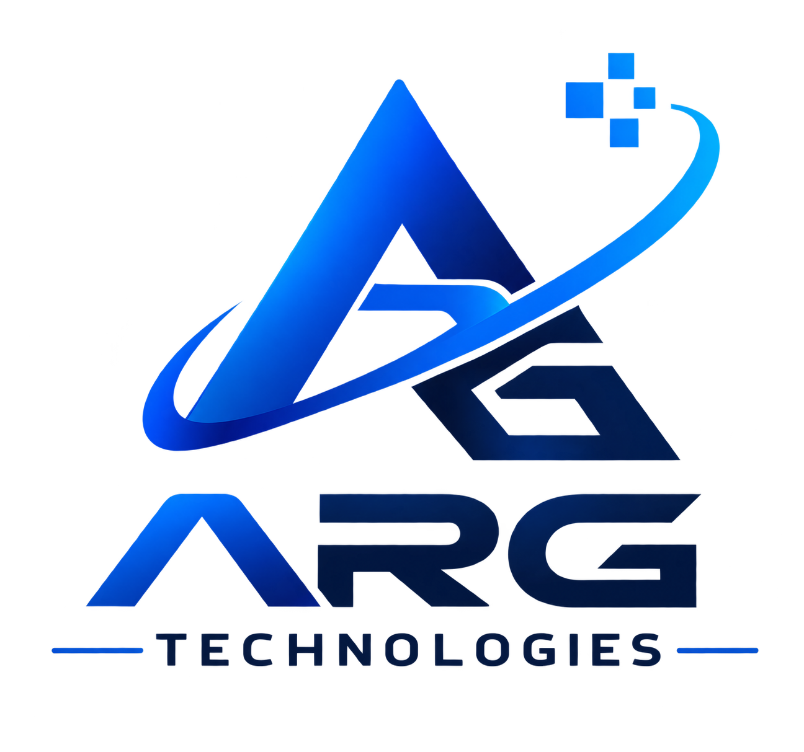

Who is passionate about technology, creativity, and problem-solving, I
combine innovative thinking with technical expertise to create
meaningful digital solutions that help individuals and businesses
thrive in an increasingly digital world. Through ARG Technologies, I
aim to make technology more accessible, practical, and impactful.
My areas of focus include Web Development, Data Analysis, and Training
& Education. I create responsive and user-friendly websites, transform
data into valuable insights that support informed decision-making, and
provide practical digital skills training that empowers individuals to
explore opportunities in technology.
My mission is to deliver quality digital solutions, promote digital
literacy, and embrace continuous innovation. I am committed to helping
businesses grow, empowering individuals with relevant digital skills,
and creating solutions that make a lasting difference.

- I deliver quality and reliable digital solutions.
- I provide practical skills and professional services.
- I am committed to helping individuals and businesses succeed in the.